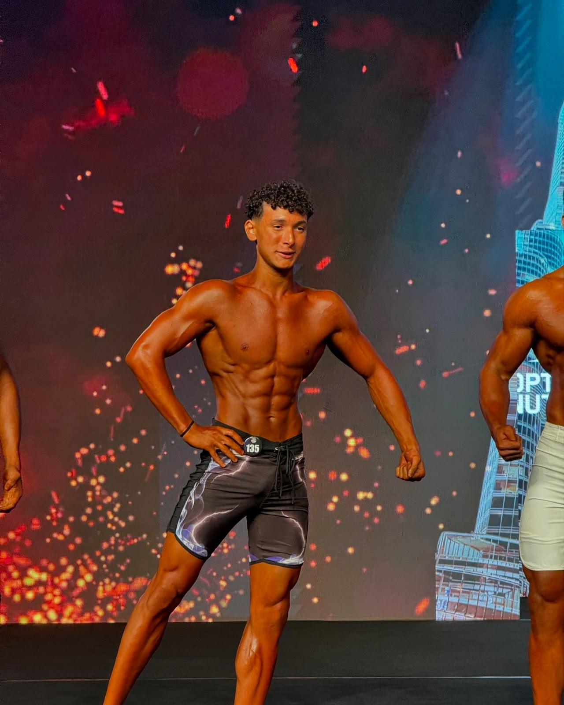
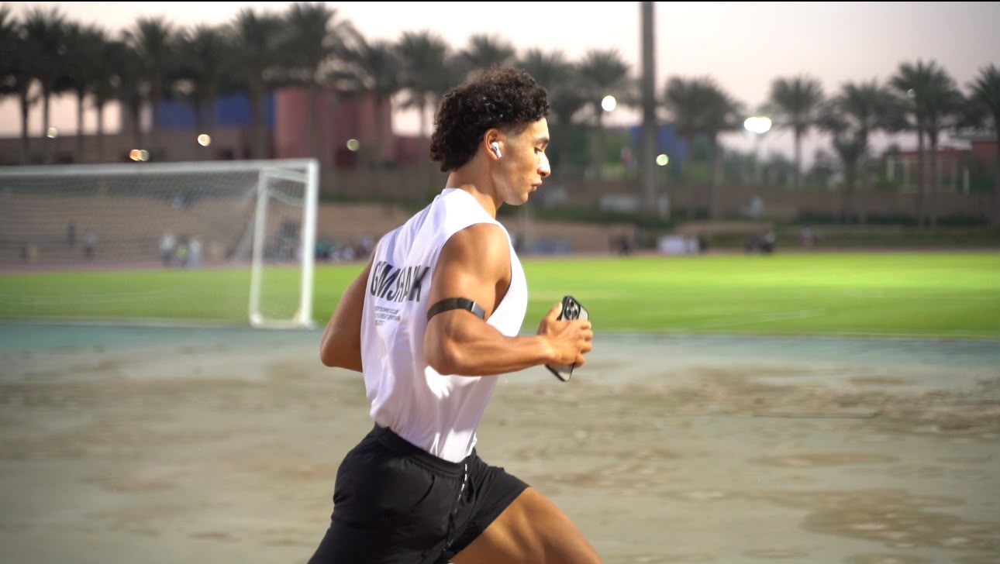
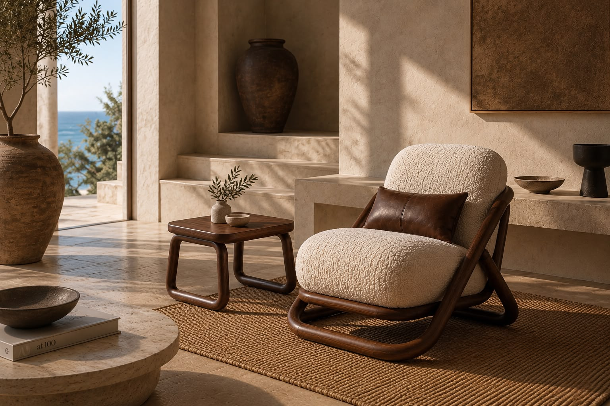
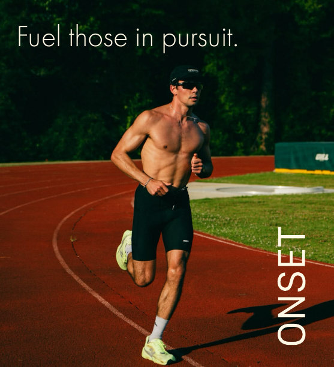
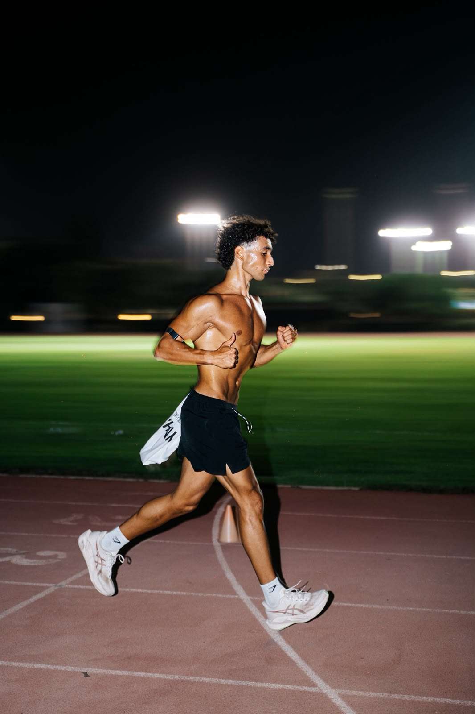
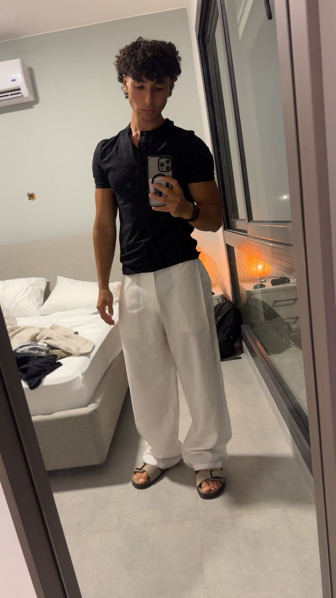
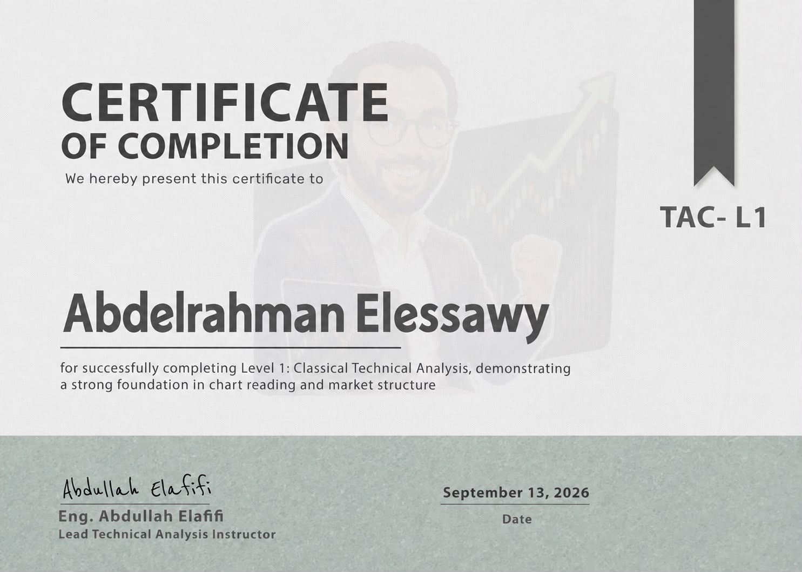

ONLINE COACHING
Helping people
get in shape.
I run an online fitness coaching business to help people work toward their fitness goals.
ASK ABOUT COACHING ↗
COMPUTER SCIENCE · ENTREPRENEURSHIP · SPORT
STUDENT. FOUNDER. ATHLETE.
THE AMERICAN UNIVERSITY IN CAIRO
01 / SELECTED WORK
Furniture, fitness coaching,
and new ideas in development.

VISIT OUTFORM ↗I founded Outform Furniture, an Egyptian brand focused on handcrafted chairs. From the Montu lounge chair to the way each piece is presented, my work brings together brand development and product storytelling.

ONLINE COACHING
I run an online fitness coaching business to help people work toward their fitness goals.
ASK ABOUT COACHING ↗
WORK IN PROGRESS
Hydration. Performance.
I am building OnSet, an Egyptian electrolyte and performance brand. The project is currently in development.
IN DEVELOPMENTFINANCIAL MARKETS
I completed Level 1: Classical Technical Analysis (TAC-L1), covering chart reading and market structure.
AI IN BUSINESS
I have a strong interest in artificial intelligence and use AI tools across many aspects of my businesses, from exploring ideas and planning content to supporting day-to-day work.

02 / BEYOND THE CLASSROOM
I competed in natural bodybuilding in 2023. Today, my focus has shifted toward running and HYROX, combining endurance with a foundation in strength.
03 / ABOUT ME

I'm Abdelrahman, a graduating Computer Science senior at The American University in Cairo.
Alongside my studies, I am the founder of Outform Furniture, run an online fitness coaching business, and am developing OnSet. I also study stock-market technical analysis. Outside of work and university, I train for running and HYROX, with my first half marathon as the next goal.
Computer Science · Graduating senior
04 / CERTIFICATION
TAC-L1 · Completed September 13, 2026
Chart reading and market structure.
Instructor: Eng. Abdullah Elaffifi.
